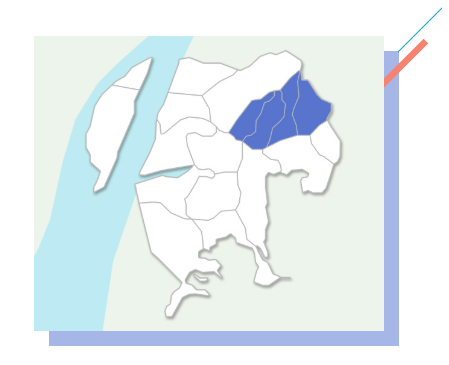

우리 동네, 괴정동
괴정동(槐亭洞)은 승학산의 서쪽 능선이 마을 뒤를 병풍처럼 둘러져서 세찬 북풍과 낙동강 강바람을 막아 주고, 동쪽으로 시약산(蒔藥山)이 솟아 있고, 남쪽에는 금티산(金峙山)이 솟아 그 줄기가 서쪽으로 나즈막한 구릉(丘陵)을 이루어 해풍(海風)을 막아 주는 방파제 구실을 하고 있다. 새리골(세리골)에서 흘러내린 물이 괴정천(槐亭川)을 이루어 괴정촌을 반월형(半月形)으로 흘러 이 마을을 윤택하게 하고, 하단 포구로 흘러 들어간다. 따라서, 괴정동은 사방이 산으로 둘러싸인 하나의 분지(盆地)를 형성하고 있다. 괴정(槐亭)의 지명(地名)은 팔정자에 얽힌 사연이 있는 회화나무(槐木)에서 유래된다. 수령이 600년이 넘는 이 나무는 가렴주구에 혈안이 된 포악한 다대포 첨사의 이야기와 동래부사의 벌목령 등 많은 전설을 안고 있으며, 회화나무의 또 다른 이름인 괴목(槐木)에서 마을 이름이 붙여진 것이다. 괴정 1동을「고분들」·「본동」이라 불렀고, 희망촌(괴정4동)을「말골」·「마하곡」·「소태미」라 하였다. 6·25사변 때 피난민들이 살던 보수천변 판자촌과 동광동 판자촌 화재 이재민들이 이사하여 새로된 마을이 괴정3동에 있는「신촌(新村)」이다. 또, 신촌 건너편 북쪽 산기슭에 간이 주택촌이 들어서서「양지(陽地)」마을을 형성하였고, 서대신동으로 넘어 가는 괴정동 대티(大峙)고개 밑에 있는 마을을 대티동이라 불렀다.
이와 같은 마을들의 명칭을 종합하면, 괴정동에는 곳곳에 옛부터 촌락을 형성하고 살았다는 것을 알 수 있다. 괴정동은 지리적으로 사람이 살기 좋은 조건을 갖추고 있었기 때문에 선사시대(先史時代)부터 사람들이 마을을 일구워 살았다. 괴정분지에서 농경(農耕)에 종사하고, 동쪽 구릉을 넘어 감천 앞 바다에서 고기를 잡고, 아랫머리 산줄기를 돌면 조개와 물고기가 수없이 많은 낙동강 포구에 이르고, 배고개를 넘으면 신평 너른 들과 강가에 다다랐으니, 그 당시 식생활을 해결할 수 있는 좋은 입지적 조건을 갖추었다.
뿐만 아니라, 신평동으로 넘어가는「삼밭골」에서 삼농사를 지어 옷을 만들어 입었고, 하단 갈밭에서 거두어 들이는 갈꽃은 솜의 역할을 하여서 추위를 막아 주었다. 실제로 괴정동 패총(貝塚)에서 실을 꾀는데 사용한 방추자(紡錘車) 두 점이 나왔다. 그리고, 이 병도 박사도 갈꽃이 면재배(綿裁培) 이전에는 솜의 역할을 대신했고, 명주가 나온 뒤에도 가난한 백성들은 갈꽃을 삼베옷 사이에 넣어 겨울을 지냈다고 한국사(韓國史)에 썼다. 괴정동에서 선사유적(先史遺蹟)과 유물(遺物)이 발견된 지점은 지금 장평 중학교 교문옆 길가와 대티(大峙)로 올라가는 옛길 입구 즉 신동 교역회사 공장뒤편의 주택가, 그리고 지금 괴정(槐亭)초등학교 남쪽 길건너 냇가 일대에서 청동기 시대의 무문토기(無文土器) 유물이 쏟아져 나왔다.
민무늬토기에 단(丹)을 칠한 완형토기(完形土器)가 우리나라에서 출토된 예는 별로 없었다. 그러나, 이 토기는 일본의 이른바 야요이식(彌生式) 토기에 직접적인 영향을 주고 있어 더욱 중요한 가치를 지니고 있다. 민무늬토기를 비롯한 유물들은 도로확장공사 중 우연히 발견되었다. 주택이 들어서기 전부터 발굴을 하고 보존을 잘 하였다면, 우리 선조들의 생활 모습과 더 많은 유물이 발굴되었을 것으로 보아 아쉽다. 괴정동에 남아 있는 큰 나무(槐木) 두 그루 중 산록에 있는 고목(古木)을 중심한 주변 일대가 패총(貝塚)이 있었으나, 지금은 사람들이 집을 짓고 살아서 완전히 없어져 버렸다. 아니 집 밑에서 옛 선인(先人)들의 유물들이 잠자고 있을지도 모른다. 이 패총은 1929년 11월 24일 일본 사람 좌산우좌길(佐山右佐吉)이 발견하여 대곡미태랑(大曲美太郞)과 함께 조사했다. 그 뒤 기록이 분명하지 않고 있는 곳도 잘 모르다가 1978년 길을 크게 넓히는 공사를 하다가 패총이 있는 곳을 찾아 부산대학교 박물관 팀이 처음으로 조사하였다. 그러나, 앞에서 설명한 대로 집들이 꽉 들어차서 큰 성과도 올리지 못했다. 부산시 문화재 위원회에서는 심의를 하여 이 패총을 부산시 지정 문화재에서 해제해 버렸다. 우리 사하 고장의 문화재를 정식으로 조사도 하기 전에 상실한 것은 후손으로서 실로 안타까운 일이 아닐 수 없다. 이곳에서 나온 유물은 김해식토기편(金海式土器片)과 토제방추차(土制紡錘車) 등 여러 가지이다. 적갈색 토제방추차 2개가 나온 것은 그 당시 직조문화(織造文化) 즉 베를 짜서 입고 살았다는 사실을 증명해 주고 있다. 패총이 있는 곳에는 마을이 있었다는 것을 말해 주는데, 그때부터 해방 후까지 괴정동의 원래 사람들이 모여 살았던 장소가 여기였다. 옛날 사람들이 잡은 살기 좋은 명당(名堂)은 지금도 살기 알맞은 명당이다. 괴정동 패총에서 나온 토기편은 김해식 토기편과 다를 바 없기 때문에 강건너 김해지방 사람들과 교류가 빈번했을 것으로 보인다.
부산으로 넘는 산은 높고 험하기 때문에, 자연히 낙동강에서 수렵어로 생활을 하면서 김해문화기에 속했다. 괴정동 패총과 이어져 옛 오성고등공민학교 일대에 밀집된 괴정동 고분군(古墳群)은 특이한 석곽옹관묘(石槨甕棺墓)와 수혈식 석곽묘(竪穴式 石槨墓)가 발굴됨으로써 학계의 주목을 끌었던 유적이다. 이런 옹관묘나 석곽묘는 기원2～3세기의 것이라고 생각되며, 석관묘의 경우는 더 연대가 내려가면서 계속되었다. 석곽묘에서 주목할 것은 금지환(金指環)이 여러개 나왔다는 사실이다. 이것은 일찍부터 이 마을에 금지환을 사용하는 사람들이 있었다는 것과, 이 마을의 규모와 신분이 상당히 높은 사람이 살았다는 것을 알 수 있다. 이 고분군 속에는 가야(伽倻)후기인 삼국시대의 고분도 있다. 이곳에서 나온 여러 유물들은 경성대학교와 성지공고 박물관에 보존되었다. 부산시의 역사편찬에서 고려시대가 가장 자료가 없다. 괴정동 역시 마찬가지이며 고려시대의 고분은 승학산에서, 조선시대의 고분은 금티산록(金峙山麓)에서 발견된다. 특히 조선시대의 무덤 앞에서는 상평통보(常平通寶) 등 엽전(葉錢)을 놓고 사발로 덮어놓은 유적이 여러개 발견되었다. 괴정동은 조선시대에 목마장(牧馬場)으로 기록된다. 동래부지(東萊府誌)에 나온 목장리(牧場里)가 바로 괴정리(槐亭里)이다. 부산의 목장은 영도가 가장 큰 것이었고, 그 다음이 괴정인 것 같다. 여기에서 목장리는 괴정만 말한 것이 아니고 당리, 하단까지 일컫는다. 이곳에서 언제부터 말을 길렀는지는 알 수 없다. 하여간 목마장으로서의 시설은 일제시대까지 그 목책(木柵)이 남아 있었다고 하며, 확실한 시설로는 목마성(牧馬城)이 남아 있다. 이 목마성을 국마성(國馬城)이라고도 부르며 축성(築城) 연대는 알 수가 없다. 석축으로 된 이 성은 대티고개에서 당리 뒷산까지 약 3㎞로 이어진다. 그 중에서 가장 완전한 형태로 남아 있는 곳이 희망촌(希望村) 동쪽 산골에 있는 것이다. 두께가 8척(尺)이고, 높이는 8～12척(尺)의 단단한 성으로 상단의 높이만 맞추어 쌓았기 때문에 지형에 따라 높이가 일정하지 않다. 이 성지(城地)에서도 신라토기편(新羅土器片)이 많이 발견되었는데 혹시 그 전부터 쌓여진 성을 후에 목장성(牧場城)으로 수축(修築)하였는지도 모르겠다.
괴정동의 목장은 다대첨사(多大僉使)가 감목관(監牧官)을 겸임하였었고, 지금의 희망촌을 마꼴(馬谷), 마하곡이라 불렀다. 「통샘」ㆍ「단물샘」은 괴정 패총 바로 밑에 있는 물 좋은 샘이다. 이 샘은 아마도 괴정 패총인(貝塚人)이 살던 변한(弁韓)시대에도 사용되었을 것으로 보아진다. 통샘 바로 밑에는 「큰새미걸」이 있다. 이 곳은 괴정동에 있는 빨래터이다. 도시개발과 수도시설이 된 지금도 마을 아낙네들이 빨래감을 이고 와서 옷가지들을 빨고 있는 도심속의 빨래터로서 훈훈한 마을의 인정이 오가는 곳이기도 하다. 신촌(新村)에는 집은 별로 없었고, 밭(田)이었는데 그들을「중맥들」이라고 하였다. 여기에서 대티고개를 넘으면 대신동인데 이 고갯길은 소나무가 많아서 솔티(松峙)라고 불렀다. 길이 험하고 산짐승도 나오고, 도적이 나오는 일도 있어서 하단재첩을 파는 아주머니들이 괴정사거리에서 여러 사람들이 모였다가 넘어 갔다고 해서「재첩고개」가「대티고개」로 부르게 되었다고 전하나 확인할 수는 없다. 대티고개에는「天下大將軍」과「地下女將軍」의 장승이 있었는데 6ㆍ25동란 때 없어져 버렸다. 지금은 서대신동으로 넘어 가는 길이지만, 그 당시에는 괴정에서 아미동으로 넘어 가는 고개였다. 이 길은 하단, 독지(禿旨 : 구평동), 구포, 강 건너 김해지역에서 부산까지 왕래하는 보부상(褓負商)과 일반 행인들이 다니던 길목이었다. 일제시대에 지금의 대티고개에 큰 길이 닦아지고, 괴정사거리를 거쳐 엄궁, 사상으로 가는 길과 다대포로 가는 길을 닦았지만, 좁고 거칠은 시골길 그대로였다. 거기에다 대티 마을에 분뇨투기장이 생기고 하단에 분뇨처리장이 생겨 매일 똥차가 오가면서 마을 사람들이 사는 데 어려움이 많았다. 1945년 해방될 때에 대티(괴정2동), 큰샘거리(괴정1동)에 사람들이 마을을 이루어 살았었고, 과수원이 띄엄띄엄 있었으며, 대부분은 논밭이었다. 괴정동은 일제시대 사하지방에서 가장 많은 사람들이 살았고, 중심지였기에 경찰관(警察官) 주재소가 세워졌다.
해방 후에 미처 일본으로 돌아가지 못한 일본 사람들을 수용할 목적으로 세운 법무부 출입국관리사무소의 외국사람수용소가 괴정천변 신촌 남쪽에 있었다. 이 수용소에 있었던 일본사람들이 자기나라로 하나 둘 돌아가고 한동안 텅 비었는데, 때마침 평화선(平和線)을 넘어와 우리 영해(領海)에서 물고기를 마구 잡던 일본어부들을 잡아다가 수용하는 시설로 바뀌었다. 언제 돌아갈지도 모르고 기약 없이 갇혀 있던 어부들 중에는 도망을 가거나 소동을 일으키는 사람들도 때때로 있었다. 괴정동이 새로운 모습으로 탈바꿈한 것은 1970년대다. 분뇨투기장이 사상구 엄궁동으로 가고, 대티터널이 뚫리고, 시가지(市街地) 조성을 위한 구획정리 사업이 시작되고부터다. 살기 좋은 마을이라고 대티고개 넘어 복잡한 시내에서 살던 사람들이 너도나도 몰려와 많은 집들이 세워졌다. 동아대학교 농과대학이 있던 곳에는 높은 아파트들이 세워져 아파트단지를 이루고 있다. 많은 중ㆍ고등학교가 세워지거나 이사를 와 교육의 중심지가 되었고, 괴정사거리에는 옛날 시장(괴정구시장)과 사설시장(私設市場)이 생겨 많은 사람들이 몰려와 사하지방의 상업 중심지도 된다.
괴정동은 본래 동래군 사하면의 지역으로서 앞머리에서 설명한 바와 같이 600년도 넘은 회화나무(槐木)가 있어서 괴정(槐亭)이라 하였는데, 고종 33년(1896) 지방제도 개정에 의하여 부산부에 편입되었다가, 1914년 행정구역 폐합에 따라 대티동 일부를 병합하여 괴정동이라 하고 다시 동래군 사하면에 편입되었는데, 1942년 부산부 구역확장에 의하여 다시 부산부(시)에 편입되고, 1957년 구제 실시에 의하여 사하에 편입되었다. 1959년 1월 1일 동제 개편에 따라서 부산시 조례 제156호에 의하여 괴정동을 갈라서 괴정 제1동과 제2동으로 나누었고, 1966년 1월 1일 부산시 조례 제176호에 의하여 괴정1동을 갈라서 괴정 제1동과 제3동으로 나누었다. 그리고, 1979년 8월 8일 부산시 조례 제1360호로 괴정1동이 제1동과 제4동으로 나누어 현재에 이르고 있다.